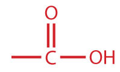
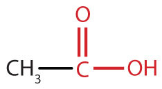
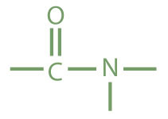
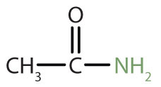
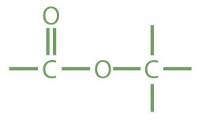
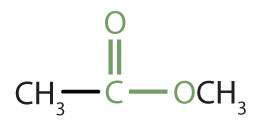

We introduced the carbonyl group (C=O)—the functional group of aldehydes and ketones—in Chapter 14 "Organic Compounds of Oxygen". The carbonyl group is also found in carboxylic acids, esters, and amides. However, in these compounds, the carbonyl group is only part of the functional group.
A carboxylic acidAn organic compound that has a carboxyl group. is an organic compound that has a carboxyl groupA functional group that contains a carbon–oxygen bond and an OH group also attached to the same carbon atom.. The carboxyl group is a functional group that contains a carbon–oxygen double bond and an OH group also attached to the same carbon atom, but it has characteristic properties of its own. As with aldehydes and ketones, carboxylic acid formulas can be written to show the carbon-to-oxygen double bond explicitly, or the carboxyl group can be written in condensed form on one line. In general, carboxylic acids are represented by the formula RCOOH, where R is a hydrocarbon group.
Esters are represented by the formula RCOOR’, where R and R’ are hydrocarbon groups. The esterAn organic compound derived from a carboxylic acid and an alcohol in which the OH of the acid is replaced by an OR group., which is organic compound derived from a carboxylic acid and an alcohol in which the OH of the acid is replaced by an OR group, looks somewhat like an ether and also somewhat like a carboxylic acid. Even so, compounds in this group react neither like carboxylic acids nor like ethers; they make up a distinctive family. Unlike ethers, esters have a carbonyl group. Unlike carboxylic acids, esters have no acidic hydrogen atom; they have a hydrocarbon group in its place.
An amineAn organic compound derived from ammonia by the replacement of one, two, or three of the hydrogens atoms by alkyl or aryl groups. is a compound derived from ammonia (NH3); it has one, two, or all three of the hydrogen atoms of NH3 replaced by an alkyl (or an aryl) group. Like NH3, amines are weak bases. The functional group of an amine is a nitrogen atom with a lone pair of electrons and with one, two, or three alkyl or aryl groups attached.
The amideAn organic compound with a carbonyl group joined to a nitrogen atom from ammonia or an amine. functional group has a carbonyl group joined to a nitrogen atom from ammonia or an amine. The properties of the amide functional group differ from those of the simple carbonyl group, NH3, and amines.
Esters and amides are considered to be derivatives of carboxylic acids because the OH in the carboxyl group is replaced with another group. These functional groups are listed in Table 15.1 "Organic Acids, Bases, and Acid Derivatives", along with an example (identified by common and International Union of Pure and Applied Chemistry [IUPAC] names) for each type of compound.
Most familiar carboxylic acids have an even number of carbon atoms. As we shall see in Chapter 17 "Lipids", these acids—called fatty acids—are synthesized in nature by adding two carbon atoms at a time.
Table 15.1 Organic Acids, Bases, and Acid Derivatives
| Family | Functional Group | Example | Common Name | IUPAC Name |
|---|---|---|---|---|
| carboxylic acid |

|

|
acetic acid | ethanoic acid |
| amine |

|
CH3NH2 | methylamine | methanamine (aminomethane) |
| amide |

|

|
acetamide | ethanamide |
| ester |

|

|
methyl acetate | methyl ethanoate |
How is the carboxyl group related to the carbonyl group and the OH group?
How is the amide group related to the carboxyl group and amines?
The carboxyl group has a carbonyl group joined to an OH group.
The amide group has a carboxyl group joined to an amino group.
Draw the functional group in each class of compounds.
How are the functional groups in Exercise 1 alike and different?
Draw the functional group in each class of compounds.
How are the functional groups in Exercise 2 alike and different?